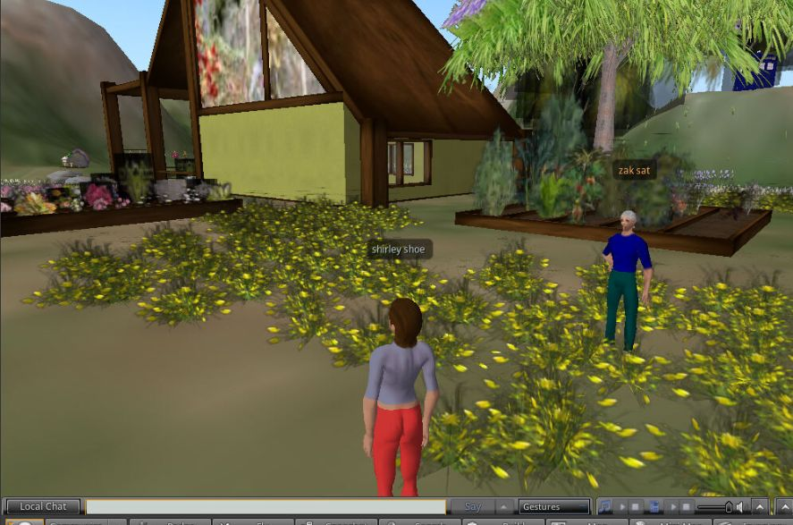
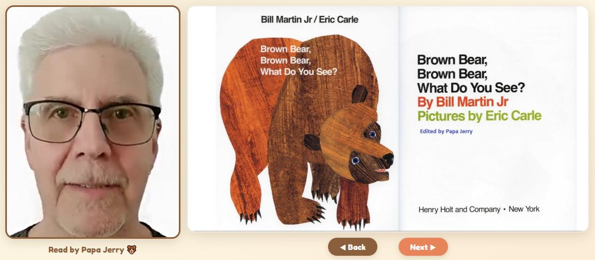
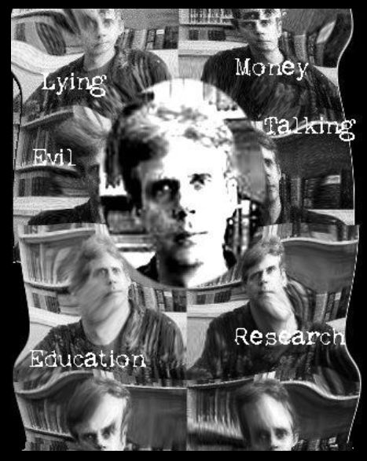
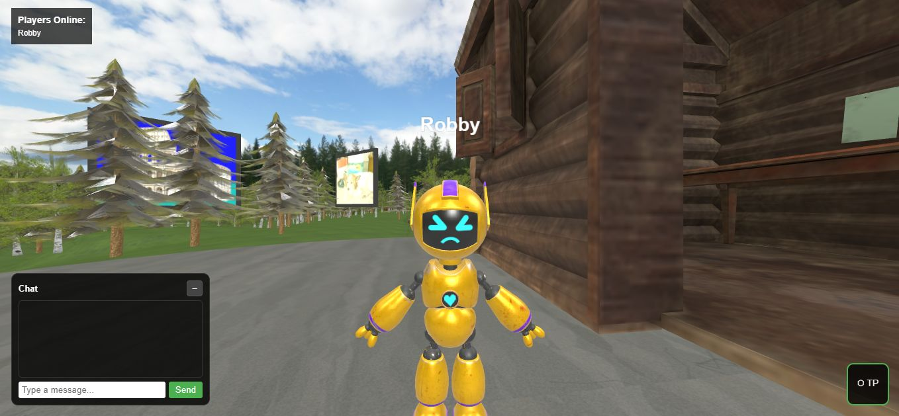
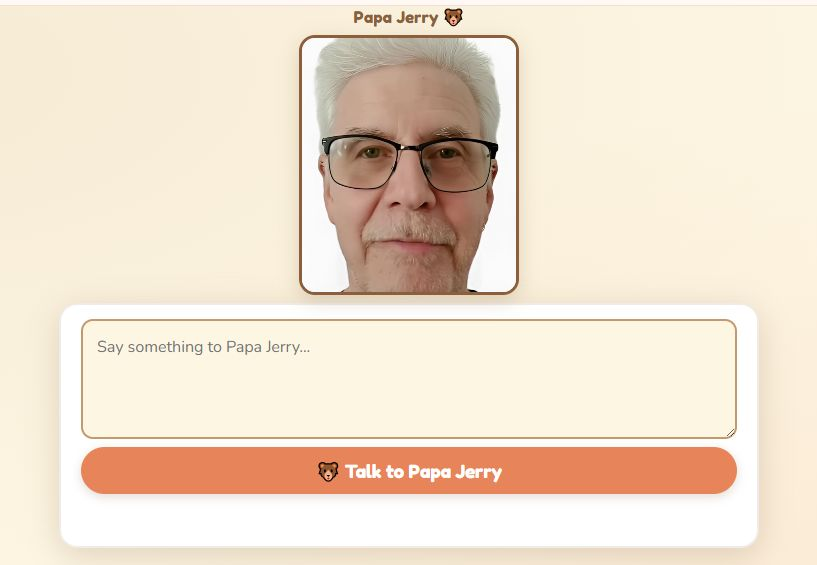
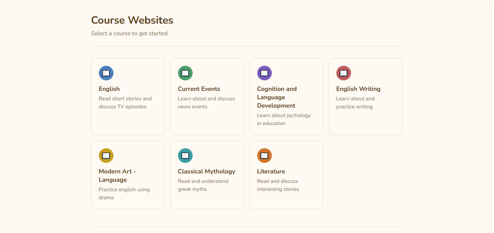

sixth
June 26, 2026
You have to follow all of the steps on the github page to get things moving - simcodeAfter all the steps are going, you can start an entry page where 2 users can join an opensimulator world running in a codespace.- World

fifth
June 26, 2026
Brown Bearhas Papa Jerry reading the story Brown Bear to his grandson, Noel, using a cloned voice and generated images.

fourth
June 26, 2026
Meis a little site created to show how the teacher felt about certain topics.

third
June 26, 2026
To start the multiplayer 3D virtual world, first go to vworld , so you can start the codespace and run the world using ./start-world.shThen open the page where you can select your avatar and join the world. Join

second
June 23, 2026
This one is a bit trickyColab notebook first, the colab research page using satorizak has to be started
Talk then, the github.io page has to be loaded to talk to Papa Jerry.

first
June 23, 2026
Course WebsitesThis page contains old course websites that have been modified to contain only html.
